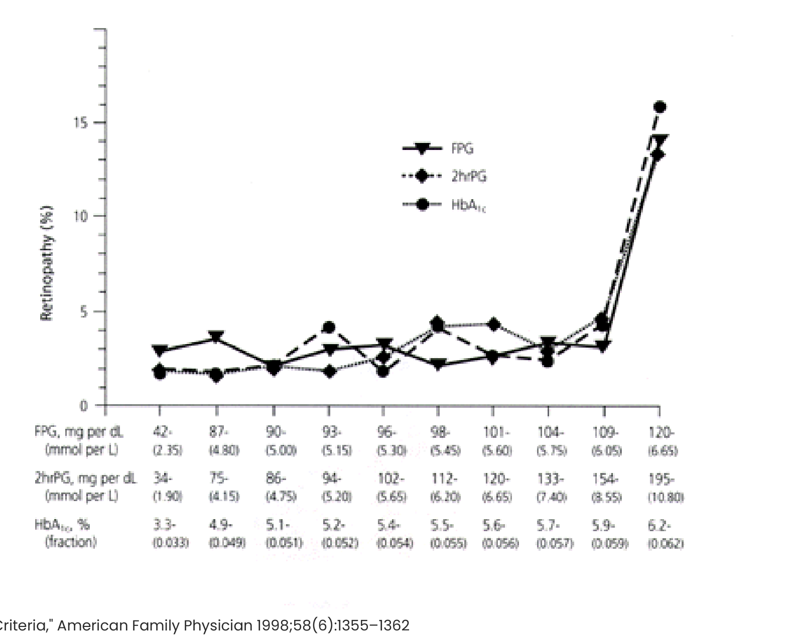
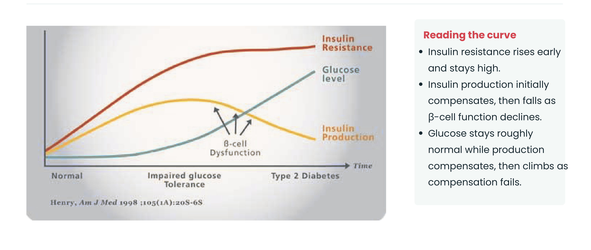

Type 2 Diabetes: Diagnosis, Pathogenesis & Epidemiology
Learning Objectives
- Describe the diagnostic criteria for T2DM, including the "grey zone" (IGT/IFG) and non-glucocentric abnormalities that can accompany it.
- Identify the contributors to T2DM risk: insulin resistance and insulin deficiency.
- Outline global and Canadian T2DM prevalence/incidence, and communities at particular risk.
- Define who is at risk for T2DM — genetic and environmental.
Diagnostic Criteria
Good news: the thresholds are identical to Type 1. Any one of the three, confirmed on a second occasion, is sufficient:
| Test | Threshold |
|---|---|
| Fasting Plasma Glucose (FPG) | ≥ 7.0 mmol/L |
| Hemoglobin A1c | ≥ 6.5% |
| 75g OGTT (2-hr) or random plasma glucose | ≥ 11.1 mmol/L |
Why These Particular Thresholds?
Not arbitrary — they mark the glycemic level where diabetic retinopathy risk rises sharply:

Practical Considerations
| Situation | What to do |
|---|---|
| Symptomatic hyperglycemia (thirst, polyuria, weight loss) | One abnormal test is enough |
| No hyperglycemic symptoms | Need two abnormal tests, on a different day, different sample |
| Acute illness (recent MI, high-dose steroids, sepsis) | Can transiently raise glucose — suspect DM, but confirm once recovered |
Prediabetes: the "Grey Zone"
| Category | Range |
|---|---|
| Impaired Fasting Glucose (IFG) | 6.1–6.9 mmol/L fasting |
| Impaired Glucose Tolerance (IGT) | 7.8–11.0 mmol/L, 2-hr OGTT |
| A1c | 6.0–6.4% |
Cutoffs vary by country. People with IGT/IFG are the target population for T2DM-prevention efforts — elevated risk, but not yet diagnostic.
T2DM Is More Than "Just" Hyperglycemia
| Abnormality | Detail |
|---|---|
| Abnormal lipids | ↑ triglycerides, ↓ HDL, small dense LDL (particularly harmful to endothelium) |
| Vascular inflammation | Increased systemic + vascular inflammatory activity |
| Elevated free fatty acids | Often from increased visceral fat and its lipolysis |
| Hypertension | Frequently co-occurs with insulin resistance |
| Sleep apnea | Common, often underdiagnosed comorbidity |
Sidebar — Metabolic Syndrome
Several of the abnormalities above cluster into Metabolic Syndrome: hypertension, low HDL, elevated triglycerides, increased waist/hip ratio, elevated blood glucose.
Without T2DM: signals increased risk for cardiovascular disease and future T2DM. With T2DM: further increases cardiovascular risk, above and beyond T2DM alone.
T1DM vs. T2DM: Why the Extra Diagnostic Nuance?
| Feature | Detail |
|---|---|
| Presentation tempo | T1DM is usually acute and glucose very high — diagnosis is prompt, confirmatory testing rarely needed |
| Indolent prodrome | T2DM can sit in IFG/IGT for years; results can shift with weight, activity, and physical stress |
| Metabolic burden | T1DM patients usually don't carry the magnified metabolic-syndrome risks that T2DM patients do |
Pathophysiology: Two Core Concepts
| Concept | Definition |
|---|---|
| Insulin Resistance (IR) | Cells (esp. liver, adipose, muscle) need more insulin than normal to move glucose in |
| Insulin Deficiency (ID) | Not enough insulin to meet the body's needs — absolute in T1DM, relative in T2DM |
T2DM is a variable mixture of IR + ID. Which comes first is genuinely uncertain (resistance overwhelming the pancreas, vs. early β-cell insufficiency causing glucose toxicity that stresses the pancreas further) — but clinically it doesn't matter, since both are typically present by the time T2DM is diagnosed.

| Causes of inadequate insulin secretion | Causes of insulin resistance |
|---|---|
| Inheritance (genetics) | Inheritance (genetics) |
| Surgery (partial pancreatectomy) | High-fat, high-refined-carb diets |
| Excess glucose (negative feedback effect) | Lack of muscle activity |
| Excess free fatty acids (visceral fat lipolysis) | Excess adipose tissue |
| Systemic inflammation (abnormal adipocytokines) | |
| Abnormal mitochondrial function; the liver matters too |
Case: 28-Year-Old, Newly Found BG 12 mmol/L
Previously well; only symptom is fatigue; no medications. Mother has T1DM (DKA at age 6). Grandfather has T2DM (diagnosed age 70, on metformin only).
What to ask/do, and why:
- Activity level? Stopping intentional activity (e.g. after the pandemic) could tip BG into the diabetic range → suggests underlying T2DM.
- Recent weight change? Weight gain could tip BG into T2DM range; sudden dramatic weight loss would raise concern for T1DM instead.
- Repeat BG/OGTT/A1c? Absolutely — he has negligible symptoms, so a confirmatory test is required.
- Abdominal ultrasound? Theoretically pancreatic insufficiency could stem from pancreatic cancer, but that's unlikely at his age with no other symptoms — not routine.
- C-peptide & anti-GAD antibodies? C-peptide would be high and anti-GAD low if T2DM. Sometimes checked, but usually type is inferred from time course and treatment response instead — and not all tests are covered by insurance.
Epidemiology: A Continuing, Evolving Pandemic
About 90% of all diabetes is Type 2. The numbers are sobering:
| Statistic | Value |
|---|---|
| Adults living with diabetes worldwide | 589M (~1 in 9) |
| Share of all diabetes that is Type 2 | > 90% |
| Adults projected to have diabetes by 2050 | 853M (13% of adults) |
| Deaths attributed to diabetes in 2024 | 3.4M (1 every 9 seconds) |
| Adults with diabetes currently undiagnosed | ~43% |
| Global health expenditure due to diabetes | > $1 trillion |
International Diabetes Federation, IDF Diabetes Atlas, 11th ed. (2025)
Canada
| Measure | 2020 | 2024 |
|---|---|---|
| Living with diabetes (diagnosed) | 3.77M (10%) | ~4.01M (10%) |
| Living with diabetes (incl. undiagnosed) | — | ~5.81M (15%) |
| Diabetes (incl. undiagnosed) or prediabetes | 11.2M (29%) | ~11.9M (30%) |
| Direct cost to health care system/yr | $3.8B | $18.25B |
| Share that is Type 2 | — | ~90% |
Communities at particular risk
- Asian, South Asian, Hispanic
- Native Canadian / American / Indigenous
- African American / African-descent
- Women with previous gestational diabetes (GDM)
The burden of suffering
For the individual: visual loss, renal failure, limb loss, stroke, heart attack — plus a significant financial burden on individuals, health systems, and governments.
Who's at Risk?
Genetics
- No single "silver bullet" gene — T2DM is polygenic.
- Monozygotic twin has T2DM → other twin has ~90% risk.
- ~40% of people with T2DM have a parent with it.
- First-degree relative → lifetime risk is 5–10% higher than someone without that family history.
Environment
| Factor | Detail |
|---|---|
| Diet | Low-fibre, high-fat, high-refined-sugar; amplified by decades of "portion creep" |
| Inactivity | Reduced muscle activity impairs glucose uptake, worsens insulin resistance |
| Obesity | Population weight and T2DM prevalence track together |
| Socio-economic status | Diet, activity, and obesity risk aren't independent of SES |
The intrauterine environment
- Birth weight extremes (both under- and overweight infants) → increased metabolic risk decades later.
- In-utero glucose exposure (even with excellent maternal glucose control) may cause permanent DNA changes that raise later metabolic risk — and prematurity itself is an independent risk factor for later metabolic dysfunction.
- A child of a mother with T1DM carries only a small increased risk of T1DM themselves (~3% lifetime) — far lower than the inherited risk of T2DM from in-utero glucose/prematurity exposure above.
Is a T2DM Diagnosis Necessarily Permanent?
| Good news | Bad news |
|---|---|
| The diabetes threshold is a (slightly) arbitrary glucose cutoff. If weight falls, activity rises, and food choices don't spike BG, glucose can fall back below the diabetic range — technically no longer "DM" (though periodic re-checks are still wise, since it can return). | If pancreatic insulin deficiency is significant, BG may stay elevated despite excellent lifestyle changes — e.g. if the pancreas can only support a 40kg person's needs, a fit 60kg patient will still need medication. Not all T2DM is due to being overweight/underactive. |
Adapted (not reproduced verbatim) from Dr. Hiba Hashmi (Assistant Professor, Endocrinology & Metabolism, St. Joseph's Health Care London), "Type 2 Diabetes Mellitus: Diagnosis, Pathogenesis & Epidemiology," plus lecture notes.